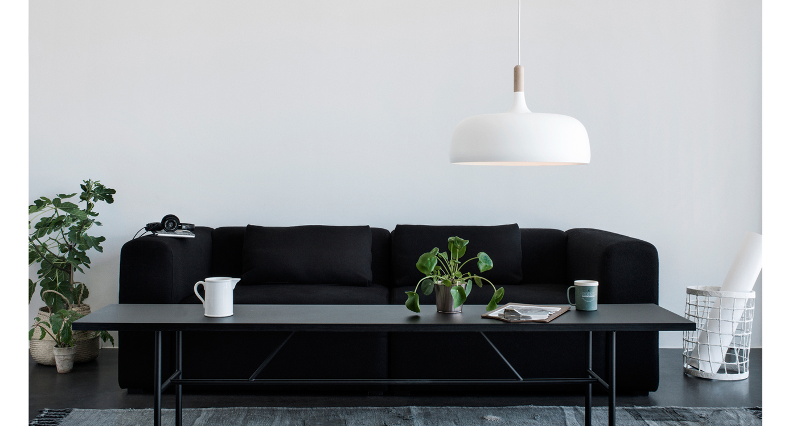
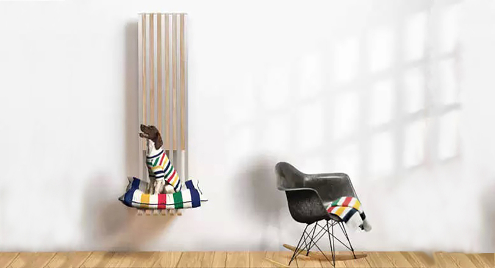
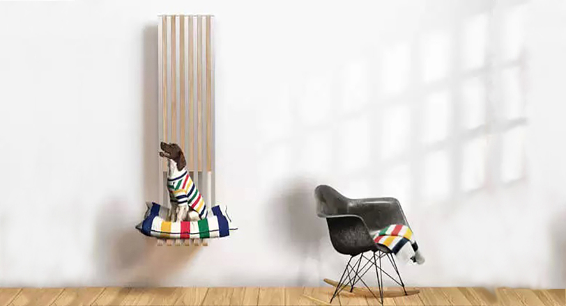

новая жизнь скандинавской классики Все чаще и чаще Северные компании переиздают объекты из прошлого. Некоторые из них даже стали известными благодаря такому маневру. Конечно же многие знают торшер GRÄSHOPPA от шведского дизайнера Греты...

 

cвет:сделано в норвегии В рамках ежегодного шоу , прошедшего в Лондоне в 22 по 26 сентября, лучшие норвежские дизайнеры...
saphirkeramik – инновационный дизайн от laufen Формула SaphirKeramik предоставляет беспрецедентные возможности для исходного сырья и расширение сферы...
oбустройство интерьера, если в доме есть животные Домашние животные такие же члены семьи, со своими особенностями и потребностями нуждающиеся в своем личном...